| Fysio Flex System |
|
Inleiding
Verloop Kabel YSI400 |
| Temperatuur Meting |
De meest gebruikte temperatuur sensors
voor medische toepassingen zijn de YSI-400 series.
Deze sensoren zijn er in diverse uitvoeringsvormen
verkrijgbaar, zijn steriliseerbaar en optimaal geliniariseerd voor het
gebied van 35 Celcius tot 45 Celcius. Binnen dit temperatuur bereik is
de fout bij uitwisseling van sensoren minder dan 0.1 Celcius.
Middels een verloop-kabel kunnen de YSI-400
sensoren direct worden aangesloten op de medisch veilige ingangen van de
FysioFlex.
| Zonder extra linearisatie wordt de hier
naast getoonde absolute fout verkregen.
Het gebruikte FysioFlex kanaal wordt als
volgt ingesteld:
Bijbehorende Tweepunts Kalibratie
|
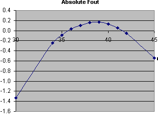 |
Indien een kleinere absolute fout is gewenst,
kan door de Instrumentele Dienst een rekenfunctie worden gemaakt, welke
de absolute fout over het gebied 35 .. 43 Celcius terugbrengt naar 0.1
Celcius.
| 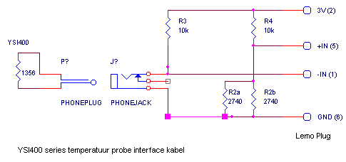 |
|
Temperature
Range
|
0 to 60°C |
|
Accuracy
|
±0.2°C from 0 to 60°C, ±0.1°C from 32 to 42°C |
|
Cleaning
|
Probes should be cleaned with a mild detergent and water to remove excess bioburden and improve the effectiveness of disinfection and sterilization. |
|
Disinfection
|
Low level: Cidex/glutaraldehyde
High level: Cidex/glutaraldehyde, dilute bleach, 70% isopropyl alcohol |
|
Sterilization
|
Ethylene Oxide gas, STERISTM System 10 |
|
Cable and
Termination
|
10 ft. (3 m) vinyl cable terminated in standard 1/4" phone plug |
| The
Industry Standard in Patient Temperature Monitoring
For 40 years YSI has played a key role in temperature monitoring for healthcare. In the early 1950s, YSI introduced the first practical electronic medical thermometer and, shortly thereafter, the first interchangeable thermistor components which became the 400 Series probes. In the 1960s, YSI received a patent on thermilinear components which provided a linearized output. These thermilinears became known as the YSI 700 Series probes. Both of these designs set the industry standards for accurately measuring patient temperature in the operating room. The 400 Series continues to be the most widely used probe platform as the increased use of microprocessors has reduced the need for linear probe output. The latest innovation from YSI has been incorporated into the newest probe line, the YSI 400AC Autoclavable Reusable Temperature Probes. All YSI reusable temperature probes are calibrated using standards traceable to the U.S. National Institute of Standards and Technology (NIST), and carry the CE Mark (certified to the Medical Device Directive (MMD) 93/42/EEC). |
| 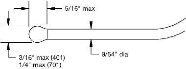 |
YSI 401 &
701 Esophageal/Rectal, Adult
|
| 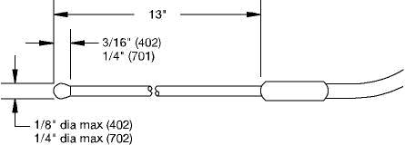 |
YSI 402 &
702A Esophageal/Rectal, Pediatric
|
| 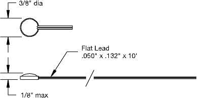 |
YSI 409B &
709B Skin, Adult
|
| 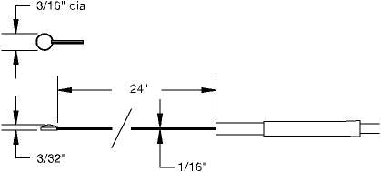 |
YSI 427 &
729 Skin, Pediatric
|
| 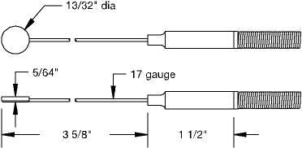 |
YSI 408 &
708 Banjo-style Skin
|
| 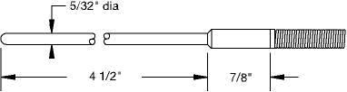 |
YSI 403 &
703 Tubular Oral or Rectal, Adult
|
| 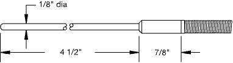 |
YSI 406 Tubular
Oral or Rectal, Pediatric
|
| 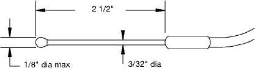 |
YSI 423 Oral
or Rectal, Pediatric
|
| NEW!
YSI 400AC Series
Autoclavable Reusable Temperature Probes The same accurate, dependable YSI 400 Series probes can now be Steam Autoclaved for up to 100 cyles! |
| 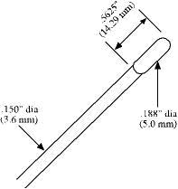 |
YSI 401AC Esophageal/Rectal,
Adult
|
| 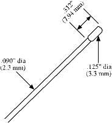 |
YSI 402AC Esophageal/Rectal,
Pediatric
|
| 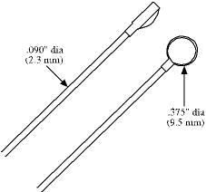 |
YSI 409AC Skin
|